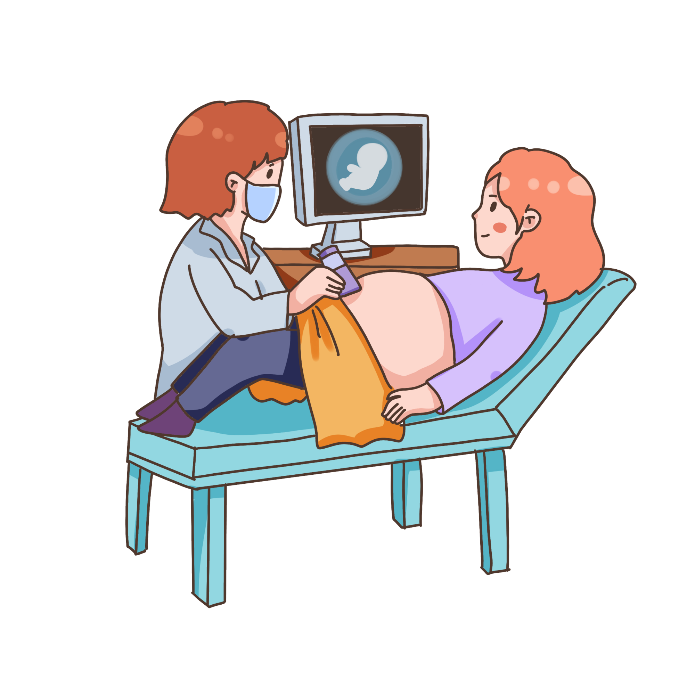

KEMATIAN PADA IBU HAMIL DAN MASA NIFAS PADA PROV. RIAU


KEMATIAN PADA IBU HAMIL DAN MASA NIFAS PADA PROV. RIAU
Mengkaji faktor-faktor penyebab kematian pada Ibu
Menganalisis dan interpretasi informasi yang terkumpul
Bertindak untuk mengurangi angka kematian Ibu di masa mendatang
-Total kematian Ibu Hamil dan Masa Nifas Prov.Riau Semester Pertama tahun 2020 adalah 69 orang
-Kabupaten penyumbang kematian tertinggi adalah Kabupaten Bengkalis dan Rokan Hilir
-Kabupaten Bengkalis dan Kabupaten Rokan Hilir merupakan salah satu kabupaten terpencil di Provinsi Riau dan merupakan salah satu kabupaten dengan populasi penduduk terbanyak di Provinsi Riau

-Pada Prov. Riau, penyumbang kematian Ibu terbanyak disebabkan karena Pendarahan
-Pendarahan rentan terjadi pada Ibu Hamil dengan usia dibawah 20tahun. Hal ini dikarenakan, alat reproduksi pada usia belia belum dapat bekerja dengan baik.
-Pendarahan dan Hipertensi merupakan penyebab umum kematian Ibu Hamil di Indonesia

-Salah satu penyebab tidak langsung dari kematian ibu hamil adalah melahirkan yang terlalu sering
-Menurut data dari Dinas Kesehatan, Ibu yang memiliki jumlah anak lebih dari 5 orang beresiko mengalami komplikasi
-Pada data yang diperolah, jumlah kematian Ibu dengan anak lebih dari 5 orang sebanyak 40 orang, sementara jumlah kematian Ibu dengan anak kurang dari 5 orang adalah 29 orang
-Usia yang disarankan untuk melakukan persalinan adalah 20 tahun sampai dengan 35 tahun
-Kehamilan yang terjadi pada usia dibawah 20 tahun dan diatas 35 tahun beresiko menyebabkan terjadinya pendarahan, infeksi, atau komplikasi
-Pada provinsi Riau, penyumbang kematian Ibu terbanyak adalah Ibu yang memiliki rentang usia dibawah 20 tahun, yang umumnya berasal dari daerah terpencil.

-Salah satu penyebab tidak langsung kematian Ibu adalah penanganan serta akses ke fasilitas kesehatan
-Pada provinsi Riau, jumlah kematian terbanyak terjadi pada Fasilitas Kesehatan Rujukan Tingkat Lanjut (Rumah Sakit Rujukan)
-Ini dapat terjadi karena telatnya penangan, keterlambatan ke rumah sakit, akses ke rumah sakit yang terlalu jauh, atau fasilitas kesehatan yang tidak memadai

Memiliki banyak anak dengan rentang waktu berdekatan akan beresiko terhadap terjadinya pendarahan. Maka dari itu, dianjurkan untuk setiap ibu memiliki setidaknya 2 orang anak
Melahirkan pada usia terlalu muda dan usia lanjut akan menyebabkan komplikasi. Usia yang dianjurkan untuk melakukan persalinan adalah 20 sampai 35 tahun
Ibu hamil wajib periksa kehamilan ke fasilitas kesehatan. Meskipun hamil bersifat fisiologis, namun pada kehamilan terdapat banyak resiko